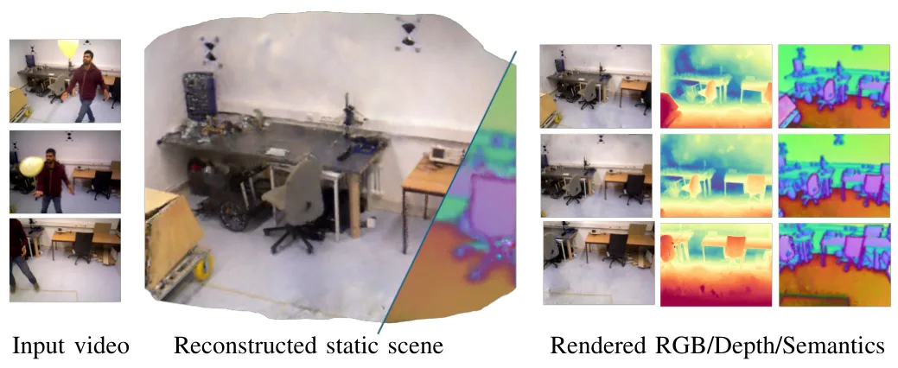
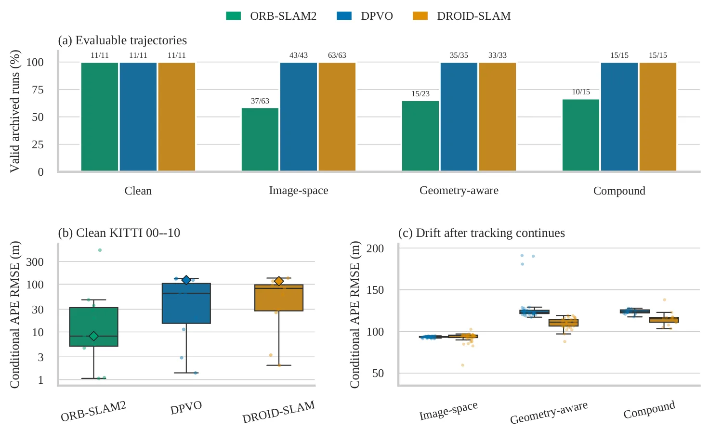

新论文 · 日期 2026-09-01 · score 12 · S层 · Geometry Foundation Models / 3D Foundation Models · cs.CV
内容级别：完整单篇海报（待补全）
作者：Kai Guan, Minchao Jiang, Ruichen WangLi, Wentao Zhu
评分 20/10
几何基础模型第一视角度量尺度人体运动扩散闭环反馈
一句话工作总结：把第一视角的 metric geometry 与严重自遮挡下的身体生成统一起来，形成 world-to-self-to-world 的可微约束链。
RESELF 将场景几何、相机轨迹和佩戴者全身运动放进同一个度量坐标系。它适配 Pi3X 几何基础模型，以逐帧尺度和相对位姿一致性稳定相机，再用几何条件扩散模型生成身体运动，并以闭环运动学反馈反过来细化相机头。
Complete 3D perception from egocentric video requires recovering the surrounding scene and the wearer's full-body motion in a shared metric frame. Existing methods typically address scene reconstruction and mo…

新论文 · 日期 2026-09-01 · score 12 · S层 · Geometry Foundation Models / 3D Foundation Models · cs.CV
内容级别：完整单篇海报（待补全）
作者：Muxin Liu, Xiaoyang Lyu, Yang-Tian Sun, Yi-Hua Huang
评分 16/10
单目深度度量几何深度基础模型相机内参SLAM综述
一句话工作总结：将单目深度基础模型的规模化数据、几何归一化与下游 SLAM 需求放到同一条可评测路线中。
这篇综述从相对深度与度量深度的区分出发，系统梳理数据集、监督/自监督学习、Depth Foundation Models、视频扩展、任意相机和 SLAM/机器人应用。它还构建统一评测流程，强调混合数据、合成数据、相机内参和时序一致性对可靠几何的影响。
Monocular depth estimation has long stood as a fundamental challenge in computer vision, enabling a wide range of applications including 3D reconstruction, robotics, autonomous driving, and augmented reality.…

新论文 · 日期 2026-08-29 · score 10 · A层 · Embodied Navigation / VLN / Spatial Reasoning · cs.RO, cs.LG
内容级别：半海报（待补全）
作者：Jose Andres Millan-Romera, Samuel Cognolato, Holger Voos, Jose Luis Sanchez-Lopez
评分 17/10
3D场景图空间推理自回归扩散FGW机器人建图
一句话工作总结：把底层平面观测提升为可生成的多层空间语义图，是从几何建图走向空间推理的直接桥接。
该工作从机器人观测到的垂直平面图出发，用 FLAGG 自回归地扩展节点和边，并用 D4 或 MiDi 联合生成语义标签、连接关系与三维质心。它覆盖墙、房间、楼层、建筑和城市层级，并提出同时衡量结构、语义和几何的 Fused Gromov–Wasserstein 评测。
Indoor 3D Scene Graphs (3DSGs) represent environments as multi-layer hierarchies that connect observed geometric primitives (e.g., planes) to higher-level metric-semantic concepts (e.g., rooms, floors, buildin…

新论文 · 日期 2026-08-29 · score 19 · B层 · Neural Rendering / 3DGS / NeRF · cs.CV, cs.AI
内容级别：简报式摘要
作者：Wenting Wang, Jiaxin Guo, Wenzhen Dong, Yun-Hui Liu
评分 15/10
动态场景语义SLAMGaussian Splatting关键帧选择静态建图
一句话工作总结：把语义先验、运动线索和全局 BA 组合成动态场景中的观测可靠性筛选器。
RoSe-SLAM 将二维 foundation model 语义特征蒸馏到 Gaussian fields，通过时空运动掩码、遮挡感知关键帧选择和多视图语义一致性，过滤动态干扰并恢复静态场景。论文在 dynamic TUM、Bonn 和 Wild-Mocap 上报告相机跟踪与静态建图优势。
In dynamic and unstructured environments, conventional SLAM systems generally suffer from significant accuracy degeneration due to their static assumptions. In this work, we propose Robust Semantic-aware Gauss…

新论文 · 日期 2026-08-31 · score 13 · B-层 · Traditional LiDAR/Visual SLAM · cs.CV, cs.RO
内容级别：简报式摘要
作者：Abhay Skaria Thomas, Shashank Agnihotri, Margret Keuper
评分 14/10
鲁棒性评测漂移合成腐蚀真实恶劣条件单目SLAM
一句话工作总结：为可靠状态估计提供“失败还是漂移”的双指标视角，提醒合成 corruption benchmark 必须验证物理保真度。
论文把单目 SLAM 的灾难性跟踪失败与持续漂移分开评估，并比较图像空间、几何感知和复合腐蚀与 4Seasons 真实恶劣条件的一致性。结果显示，结构化雨雾代理更能保持真实方法排序，而简单照明代理可能误导工程结论。
Visual SLAM is commonly evaluated on clean trajectories, although deployment failures are often caused by adverse weather, illumination, blur, and sensor artifacts. Controlled corruptions are attractive becaus…